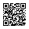
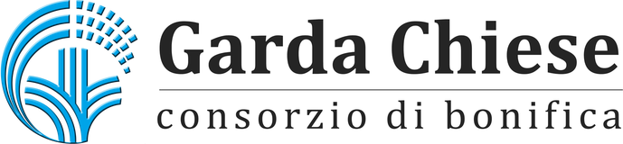

Stile preso dai tuoi esempi. Gli emoji stanno al posto degli sticker 3D di Canva. Accanto a ogni slide: testo, sticker, immagini, logo, QR e tempo. I box gialli sono le domande ancora aperte.

HACK4WATER ALERT
Challenge Consorzio di bonifica Garda Chiese · Settembre 2026
ACQUAM 2026
TEAMLorenzo CavalliniMatteo BenassiSimone Trentin
💧
📱
1 · Titolo ~0:15
Testo
"HACK4WATER" bianco + "ALERT" giallo; sotto la riga della challenge; "ACQUAM 2026" piccolo e spaziato; "TEAM" e i tre nomi in basso.
Sticker 3D
Goccia d'acqua (sinistra, in basso) e telefono (destra, in alto), come calendario e finestra web nel tuo esempio.
Immagini
Nessuna.
Logo
In alto al centro, versione bianca (logo-scuro.png).
QR
No.
Prova tu
Inquadra e manda una Segnalazione mentre parliamo
garda-chiese.simonetrentin.me

📸
2 · QR ~0:15
Testo
"Prova tu" (tu in giallo); una riga su cosa fare; l'indirizzo in piccolo per chi non inquadra.
Sticker 3D
Fotocamera in alto a sinistra.
Immagini
Nessuna.
Logo
In basso a sinistra, come nei tuoi esempi 2 e 3. Da qui in poi è sempre lì.
QR
A destra, grande, su un riquadro bianco (vero: porta a https://garda-chiese.simonetrentin.me). Su Canva va caricato a mano.
IL PROBLEMA
DOVE?
Posizione
COSA?
Criticità
QUANTO?
Priorità
PROVE?
Foto
STATO?
Esito
➜Semplice per chi segnala, utile per il Consorzio
3 · Il problema ~0:45
Testo
"IL PROBLEMA" come nel tuo esempio 2. Cinque caselle con le loro parole dal deck della challenge: domanda bianca, parola gialla. In fondo, dopo la freccia gialla, la loro domanda accorciata.
Sticker / immagini
Nessuno: le caselle vuote rendono più forte la slide 4.
Logo
In basso a sinistra.
La riga in fondo: accorciata così, o intera come nel loro deck ("Come rendere la segnalazione semplice per l'utente e utile per la struttura operativa?")? Il vincolo del reticolo consortile lo diciamo solo a voce?
COSA ABBIAMO FATTO
App di segnalazione + Portale operatore
DOVE?
📍
GPS + solo sul reticolo
COSA?
🎙️
Lo racconti a voce, l'AI compila
QUANTO?
🚦
Priorità automatica pericolo → numero verde
PROVE?
📷
Foto verificata dall'AI
STATO?
🔗
Codice pratica e link di stato, senza account
4 · Cosa abbiamo fatto ~0:45
Testo
Stessa griglia della 3: al posto della parola gialla, un'icona e la nostra frase corta. Sottotitolo "App di segnalazione + Portale operatore". Sempre "AI", mai "Gemini".
Sticker 3D
Uno per casella: segnaposto, microfono, semaforo, fotocamera, link/spunta.
Immagini
Nessuna: gli screenshot li mostra la demo.
Logo
In basso a sinistra.
In "QUANTO?" la seconda riga è in giallo per farla risaltare: va bene, o tutto bianco come le altre?
Passiamo alla demo
📱 App di segnalazione➜🖥️ Portale operatore
Una Segnalazione, dall'inizio alla fine
🚀
5 · Demo ~4:00
Testo
"Passiamo alla demo"; due pillole App ➜ Portale; una riga sotto.
Sticker 3D
Razzo in alto a destra (o un play).
Immagini
Nessuna: dopo questa slide si passa al portatile.
Logo
In basso a sinistra.
Cosa viene dopo
🧠
L'AI che capisce
JEV
La categoria non esce mai dalle 9 previste. Se non è sicura, chiede conferma.
meno di 1 € l'anno
☎️
Chatbot vocale
Numero verde
Al primo pericolo, subito un operatore umano. Anche chi non usa lo smartphone segnala.
📡
Sensori di pressione
Condotte
La Condotta ci avvisa da sola, prima che l'acqua affiori.
📊
Pianificazione
Statistiche
Ogni Segnalazione chiusa è già un dato: dove, cosa, com'è finita.

6 · Cosa viene dopo ~1:30
Testo
Slide chiara come il tuo esempio "Punti di forza": etichetta piccola sopra, nome grande, dato forte sotto. Ordine capire → ascoltare → prevenire → pianificare. Il costo di JEV in piccolo e in giallo.
Sticker 3D
Cervello, telefono, antenna/sensore, grafico: uno per colonna.
Immagini
Nessuna.
Logo
In basso a sinistra, versione a colori (logo.png).
Unica slide chiara nel deck scuro: stacca il futuro dal presente. Ti convince, o la vuoi scura come le altre?